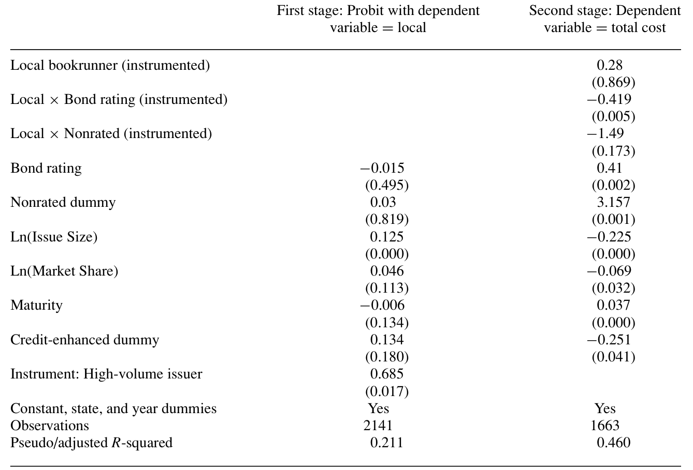
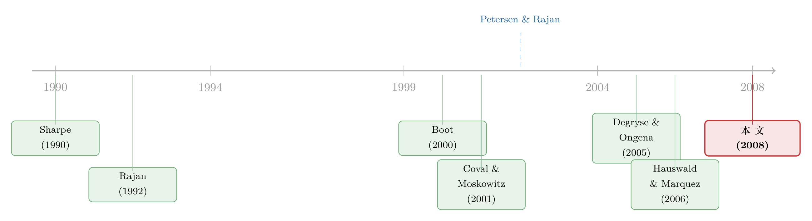

「距离已死」？可在市政债的承销桌上，离得近反而更便宜
本文读的是 Butler (2008, Review of Financial Studies)：用 1997–2001 年 41 个州的市政债承销样本，作者发现「本地」投行相对「外地」投行既有绝对优势也有比较优势——本地投行收的承销费更低、卖出的债券收益率也更低；而且这种优势在最难定价的债券（高信用风险、无评级）上最强。结论是：投行的「软信息」生产能力，依然取决于它离发行人有多近。在不能事后监督的金融中介世界里，「距离」不仅没死，反而以一种与商业银行相反的方式活着。
1 一个被宣告死亡的概念
先说一段学术公案。
2002 年，Petersen 和 Rajan 在 Journal of Finance 上发表了一篇题目就带着挑衅意味的论文——《Does Distance Still Matter?》。他们盯着美国小企业贷款看了一圈，得出的结论是：随着信息技术革命，商业银行和借款人之间的物理距离在被不断拉大；银行越来越依赖那些可以被度量、记录、传输的「硬」信息（hard information），而不再依赖那些只能靠日常接触、关系积累慢慢攒出来的「软」信息（soft information）。一句话——距离，正在死去。
这是一个很有诱惑力的判断。它符合我们对技术进步的直觉：当一切都能被搬上网、被打包成一行行可传输的数据，地理还重要吗？
但金融中介不止商业银行一种。于是一个自然的问题是：对那些做承销（underwriting）生意的投资银行来说，距离也死了吗？
这正是本文的切口。而作者给出的答案，干脆利落地写在了标题里——Distance Still Matters。距离，依然重要。
2 为什么投行的「距离」是另一个故事
要理解本文的反转，得先想清楚投行和商业银行到底差在哪。
商业银行和投行都在做同一件事：搜集信息、加工信息。但有一个关键差别——商业银行放出去的贷款，自己是要长期持有的，所以它有动机、也有机会做事后监督（ex post monitoring）：放款之后还能盯着你、必要时介入。投资银行不一样，它承销的证券转手就卖给了投资者，自己几乎不留头寸，因此它几乎只能靠事前的筛选与评估（ex ante screening）来挣钱。承销商必须在债券卖出去之前，就把发行人「软」「硬」两种信息都吃透，再把这份判断传递给市场。
这个差别带来两个相反的预测。
一方面，商业银行因为能事后「锁住」客户、做关系型放贷（relationship banking），反而可以利用信息上的垄断，向离得近、被它「看穿」了的借款人收更高的利率——这就是 Sharpe (1990)、Rajan (1992)、Boot (2000) 那条「信息俘获」（informational capture）的逻辑，也是 Degryse 和 Ongena (2005) 在欧洲数据里实打实测出来的「空间价格歧视」：离银行越近，贷款利率越高。
另一方面，投行做不到这种事后俘获。它的软信息只能用在一个地方——把难卖的债更便宜、更准地卖出去。所以如果本地投行真有软信息优势，它的表现应该是反过来的：对本地发行人收更低的费、给更好的价。
这就是本文要在数据里见分晓的两种力量：
软信息假说：本地投行因为天天看本地新闻、熟悉本地经济、和发行机构的关键人物有私交，还认识本地那些可能接盘的投资者和机构，所以能更便宜地把债卖出去——本地 = 更低的费、更低的收益率。
政治租金假说：本地投行靠的是政治关系拿到承销资格，于是它可以堂而皇之地攫取经济租金——本地 = 更高的费。
哪一种占上风，是个纯粹的实证问题。
3 为什么是市政债
接着，一个技术性却很要命的问题是：你怎么定义一家投行是不是「本地」的？
如果研究对象是公司债，麻烦就来了——一家公司可能在十几个州都有办公室和分支，它的「位置」是一团模糊的云。但市政债（municipal bond, 简称 muni）不一样：发行人是州或地方政府，位置是钉死的。这就让市政债成了研究「金融中介的地理位置到底重不重要」的一块绝佳试验田。
作者据此给出了干净的定义：如果一只债券的主承销商（bookrunner）在发行所在州设有办公室，这只债券的 Local 哑变量就取 1。注意这个定义很巧妙——比如 William R. Hough 这家投行总部在佛罗里达，但它在马里兰、得州、亚利桑那、南卡和俄亥俄都有办公室，于是它在这五个州发的债里也算「本地」。「本地」指的是有没有在场的存在，而不是总部在哪。
市政债市场本身还有几个有意思的特征，顺手交代一下：它比股票发行市场分散得多。作者用 SDC 数据算出来，前 10 大投行在市政债承销里的市场份额平均只有 73%，而在 IPO、SEO、可转债里分别高达 86%、87%、98%。市政债的平均承销毛价差（gross spread）也低得多，只有 1.16%，而 IPO 通常要 7%、SEO 在 5–6% 上下。市场如此分散、声誉溢价如此薄，恰恰暗示了投行在这个市场里很难靠声誉抽租——这与「本地优势来自软信息而非市场地位」的故事是自洽的。
4 数据：2,191 只债，41 个州
作者用的是 1997–2001 年的应税（taxable）市政债——之所以选应税而非更常见的免税品种，纯粹是务实考虑：应税 muni 的数据在常用的 SDC 新发行数据库里现成可得。（作者也说，他粗看了一遍免税品种的数据库，主要结论同样成立。）样本起点选在 1997 年，是为了避开 1990 年代中期之前那个「花钱买生意」（pay-to-play）的时代——那时投行靠给政客捐政治献金来换承销资格。
最关键的一步，是作者手工收集了样本里每一家投行的主要办公地点——主要靠各州官方网站上「在本州设有主要营业办公室的公司」名单，辅以 Bond Market Association 和 Virtual Finance Library。这是个体力活，但也是整篇文章的地基：没有这份手工的地理标注，Local 这个核心变量就无从谈起。
最终样本：2,191 只债，来自 41 个州加哥伦比亚特区。平均发行规模 $16.8 百万。其中 82.5% 由本地承销商主承——1,810 只本地，381 只外地。1,724 只债有评级；按 Cantor 和 Packer (1997) 的做法，评级被转成数值刻度（AAA/Aaa = 1，AA+/Aa1 = 2，依此类推），所以数字越大，信用风险越高。投行声誉则按 Megginson 和 Weiss (1991) 的口径，用年度市场份额衡量。
5 主要结果：本地，确实更便宜
先看不加任何控制的「裸」对比（论文 Table 2）。本地承销商主承的债券，收益率、毛价差、全口径成本（all-in cost，即收益率 + 价差）全都更低，而且都统计显著：
- 收益率平均低
24个基点（t = 2.67）； - 毛价差平均低
21个基点（t = 4.48）； - 全口径成本平均低约
51个基点（t = 4.20）。
软信息假说，1；政治租金假说，0。
但真正精彩的，是下一步。作者把样本切到信息最不透明的那一块——无评级（nonrated）债券。一只债没有评级，意味着它缺少评级机构这个外部认证，谁都不知道它到底值几个钱，因而最难卖。如果本地投行的优势真的来自「能看懂别人看不懂的东西」，那它的优势就应该在这里被放大。
结果正是如此。在无评级债里，毛价差的差距还是 22 个基点，差不多；但收益率的差距从 24 个基点拉大到 59 个基点，全口径成本的差距从 51 个基点拉大到 87 个基点。越是难定价的债，本地投行越值钱。
6 识别策略：把「比较优势」写成一个交互项
到这里，故事已经很动人了。但一个聪明的读者会立刻反应过来：均值对比能说明什么？也许本地投行接的本来就是好债，外地投行接的本来就是烂债呢？
所以本文真正的识别，落在一个带交互项的回归上。核心思想是：不要只问「本地是不是更便宜」，而要问「本地在多大程度上抵消了风险带来的成本惩罚」。把全口径成本对 Local、信用评级 Rating、以及二者的交互项回归（再加上无评级哑变量及其交互、发行规模、期限、承销商市场份额、年份等控制）：
$$ \text{AllInCost}_i = \alpha + \beta_1\,\text{Local}_i + \beta_2\,\text{Rating}_i + \beta_3\,(\text{Local}_i \times \text{Rating}_i) + \beta_4\,\text{Nonrated}_i + \beta_5\,(\text{Local}_i \times \text{Nonrated}_i) + X_i'\gamma + \varepsilon_i $$
这个交互项 \(\beta_3\) 是全文的灵魂。它衡量的是：每往下掉一个评级档，本地承销和外地承销的成本惩罚差多少。
作者算出来的量级令人印象深刻：信用评级每恶化一档，全口径成本的上升，对本地承销的债只有约 4.4 个基点，对外地承销的债却高达 18.7 个基点。换算成上面的系数，等价于外地的「每档惩罚」\(\beta_2 \approx 18.7\) bps，而本地的净惩罚 \(\beta_2 + \beta_3 \approx 4.4\) bps——也就是说 \(\beta_3 \approx -14\) bps，本地身份把四分之三以上的信用风险惩罚给「吃掉」了。
无评级的故事同样：控制其他因素后，无评级债的全口径成本比有评级债平均高 272 个基点（如果是外地承销），但只高 176 个基点（如果是本地承销）。\(\beta_5 \approx -96\) bps，本地身份又抹掉了近百个基点的「不透明溢价」。
这里的关键不是「本地总是便宜」这个绝对优势，而是「债越难，本地越便宜」这个比较优势（comparative advantage）——而后者，恰恰是软信息假说最锋利的预测。一家只会处理硬信息的投行，是没办法在「最需要软信息的地方」体现出超额优势的。
内生性这一关怎么过
那么，会不会是发行人「挑」出来的结果——好处理的债故意找本地、难处理的债被迫找外地？如果是这样，上面的交互项就被选择偏误污染了。
作者的处理是上一个同时刻画「承销商选择」与「发行成本」的设定：第一阶段用 probit 解释一只债为什么会落到本地承销手里，第二阶段把这层选择校正进成本回归（思路上是 Heckman 式的两步法，参见 Wooldridge, 2002；标准误按 White, 1980 做异方差稳健处理）。结果如表 6 所示——校正选择后，结论不仅没有变弱，反而更强了。换句话说，如果说选择偏误在起作用，它压低的恰恰是本地优势，而非夸大它。这让「本地更便宜」的因果解读更站得住脚。

Table 6: presents the results from the first- and second-stage regressions
于是反转完成：在投资银行的世界里，离得近不是用来抽租的，而是用来把难卖的债更便宜地卖出去的。这与商业银行那条「越近越贵」的逻辑（Degryse & Ongena, 2005）正好相反——而差别的根源，作者归结为一句话：商业银行能事后俘获客户，投资银行不能。
7 文献脉络
把这篇论文放回它生长的那条线上，故事会更清楚。
最早的一条线是关系型银行业。Sharpe (1990)、Rajan (1992)、Boot (2000) 一步步讲清楚：商业银行靠关系放贷，能在信息上「锁住」客户，从而对越熟悉的借款人收越高的利率。这条线在 Degryse 和 Ongena (2005) 那里被实证落地——距离越近、利率越高的「空间价格歧视」。
另一条线，是软硬信息与组织形式。Stein (2002) 和 Berger 等 (2005) 论证了小银行、扁平组织更擅长处理软信息；而 Petersen 和 Rajan (2002) 则给出了那个著名的判断——技术革命正在让距离对小企业贷款越来越不重要。这是本文要正面叫板的对象。

与此同时，金融地理学也在积累证据：Coval 和 Moskowitz (2001) 发现本地共同基金经理投本地股票能赚超额收益；Malloy (2005) 发现地理上更近的分析师盈利预测更准。它们都指向同一件事——临近，能增强信息生产（关于「老乡」是不是一种主场优势，可参见《在全球市场里，「老乡」基金经理算不算一种主场优势？》）。但这些论文都没碰投行的承销角色。本文正是补上了这一块：第一批证明「投行的地理位置也重要」的工作之一，而且证明了它的方向与商业银行相反。
至于市政债这个特定市场，它本身也越来越受关注——比如银行如何通过税收缺口影响市政债融资，进而影响地方就业（可参见《一道只为银行开的税收「缺口」，如何在衰退里造出七万个岗位》）。
8 评论与延伸（Q&A + 研究方向）
(a) 几个可能的疑问
Q：本文和 Petersen-Rajan (2002) 到底谁对？「距离」究竟死没死？
两者并不真正矛盾，差别在于「中介能不能事后监督」。Petersen-Rajan 讲的是商业银行的小企业贷款，那里硬信息可远程传输、关系可被技术替代，距离在变淡。本文讲的是投行承销，那里没有事后监督，软信息无可替代，距离依然重要。所以更准确的说法是：距离的重要性，取决于这门生意靠的是事前筛选还是事后监督。
Q：「绝对优势」和「比较优势」为什么要分开谈？
绝对优势是「本地总体更便宜」（低 51 bps 的全口径成本）；比较优势是「债越难定价，本地越便宜」（每档评级惩罚 4.4 bps vs 18.7 bps）。前者可能被各种混杂因素解释（比如本地接了好债），后者却是软信息假说独有的指纹——只有真正能处理软信息的中介，才会在「最需要软信息」的债上拉开最大差距。比较优势才是更难被替代解释推翻的证据。
Q：会不会就是发行人挑出来的——简单的债找本地、复杂的债找外地？
这正是最大的识别威胁。作者用同时建模「承销商选择 + 发行成本」的两步设定来校正，结果不减反增（表 6）。逻辑上，如果选择在起作用，它压低的反而是估计出的本地优势。当然，这套校正依赖于排除性约束的可信度，下面会谈到这点的隐忧。
Q：本地优势会不会其实是政治关系换来的租金，只是恰好表现为低价？
政治租金假说预测的是本地收更高的费，而数据是本地收更低的费，方向就对不上。而且 1997 年后的样本已经避开了「花钱买生意」时代；负责任地说，作者也指出市政债市场极其分散（前 10 大份额仅 73%），声誉/势力很难转化为定价权。这些都把租金解释挤到了角落。
Q：为什么 AAA 债的发行成本反而比稍差评级的债还高？这不反常吗？
因为很多 AAA 是「买」来的——债券投保后享有保险公司的 AAA 评级，但这类信用增强债的发行成本，比「天生」就够 AAA 的债更高。样本里信用增强 AAA 债平均收益率 6.46%，而「天生」AAA 是 6.69%……反过来，这恰恰说明评级数字本身没有完整反映信息成本，也凸显了「软信息」在评级之外仍有用武之地。
Q：用应税市政债、且只到 2001 年，结论能外推吗？
应税 muni 只是市政债市场里很小的一块，选它纯为数据可得。作者声称在免税品种里主结论同样成立，但那是「粗看」，未系统报告。样本期也偏早。所以更稳妥的态度是：本文识别出的是一个机制（软信息→比较优势），机制大概率稳健，但具体量级是否随时间、随免税/应税而变，仍是开放问题。
(b) 几个可能的研究问题与提案
1. 把「距离仍重要」搬到公司债承销上
【经济故事】本文巧在用市政债规避了「公司位置模糊」的问题。但今天我们有了细到分支机构、甚至高频地理足迹的数据，完全可以问：在公司债（尤其是高收益、首次发行、无评级私募）里，承销商的地理临近是否同样降低发行成本？机制相同：越不透明的发行人，本地承销的软信息越值钱。 【可行性】中。需要 Mergent FISD / TRACE 的发行与承销数据，加上投行与发行人的地理匹配。识别上可借界点/距离断点，但公司「位置」的定义本身就是要克服的难点，doable 但不轻松。
2. 外资承销商 vs 本土承销商：跨境版的「距离」
【经济故事】把「本地/外地」推到国境线两侧：在新兴市场或欧洲企业的跨境发债里，本土投行是否对最不透明的发行人有比较优势，而全球性 bulge bracket 投行在透明、大型蓝筹上更强？这直接把软信息假说接到了外资持有人与跨境信用市场的议题上。 【可行性】中。Dealogic / Bloomberg 的全球发行明细可得，承销商国籍可标注。难点在控制货币、法律环境与本土保护政策；可考虑用承销商并购/进入退出某国市场作为准自然实验。
3. 软信息优势如何转化为二级市场流动性
【经济故事】本文只看了发行环节（费与收益率）。但如果本地承销商更懂如何把债配置给「对的」本地投资者，那这些债在二级市场的流动性、做市深度、危机时的抗跌性是否也更好？这把软信息从一级市场延伸到了流动性研究。 【可行性】高。把承销商地理标注与 TRACE/MSRB 的二级成交数据合并，比较本地 vs 外地承销债的换手率、价格冲击、买卖价差，识别上可沿用本文的交互项思路（× 不透明度）。数据现成，是个干净的延伸。
4. 信息技术冲击能否「杀死」投行的距离优势
【经济故事】Petersen-Rajan 的核心是技术让距离变淡。那么近二十年的数据平台、电子化承销、远程尽调，是否正在侵蚀本文记录的本地优势？可以做一个跨时间的 DiD：在某项信息基础设施普及前后，本地承销的比较优势是否收窄。 【可行性】中。需要把样本延长到 2000 年代后段乃至今天，并找到一个可信的「技术冲击」时点（如某数据库/电子平台的州级铺开）。识别难点在于技术普及的内生性，但若能找到外生的铺开节奏，故事会很漂亮。
9 我的判断
本文的贡献，我愿意给得很实在：它把一个被宣告「正在死亡」的概念，在一个位置无可争议的市场里重新激活，并且漂亮地证明了金融中介的地理位置不仅重要，其作用方向还取决于这个中介能不能做事后监督。那个「每档评级惩罚 4.4 bps vs 18.7 bps」的比较优势，是我读过的、对「软信息真实存在且可定价」最干净的证据之一——它不是「本地更便宜」这种容易被混杂解释的粗对比，而是「越难越便宜」这种只有软信息假说才预测得出的精细花纹。
要说对识别的担忧，主要有两处。其一，选择校正（表 6）的可信度，最终系于第一阶段排除性约束的说服力——什么变量只影响「发行人是否选本地」、却不直接影响发行成本？论文引了一长串弱工具变量文献（Staiger & Stock, 1997；Stock, Wright & Yogo, 2002 等），说明作者自己也警惕工具的强度，这点值得读者追问。其二，Local 是个二元的「在不在场」哑变量，它把「真·软信息」和「政治/客户网络」混在了一起；虽然租金假说被价格方向排除了，但「认识本地买家」与「懂本地基本面」这两种软信息，本文还没能分开。
后续我最想看到的，是把这条「软信息→比较优势」的暗线接到二级市场流动性和外资承销商上去——前者能告诉我们软信息的价值是不是延续到了债券的整个生命周期，后者则能检验「距离」在跨境信用市场里是不是依然是一道看不见的定价楔子。
参考文献
- Almazan, A. (2002). A Model of Competition in Banking: Bank Capital vs. Expertise. Journal of Financial Intermediation 11, 87–121.
- Berger, A. N., Miller, N. H., Petersen, M. A., Rajan, R. G., & Stein, J. C. (2005). Does Function Follow Organizational Form? Evidence from the Lending Practices of Large and Small Banks. Journal of Financial Economics 76, 237–269.
- Boot, A. W. A. (2000). Relationship Banking: What Do We Know? Journal of Financial Intermediation 9, 7–25.
- Butler, A. W. (2008). Distance Still Matters: Evidence from Municipal Bond Underwriting. Review of Financial Studies 21(2), 763–784.
- Cantor, R., & Packer, F. (1997). Differences of Opinion and Selection Bias in the Credit Rating Industry. Journal of Banking and Finance 21, 1395–1417.
- Coval, J. D., & Moskowitz, T. J. (2001). The Geography of Investment: Informed Trading and Asset Prices. Journal of Political Economy 109, 811–841.
- Degryse, H., & Ongena, S. (2005). Distance, Lending Relationships, and Competition. Journal of Finance 60, 231–266.
- Hauswald, R., & Marquez, R. (2006). Competition and Strategic Information Acquisition in Credit Markets. Review of Financial Studies 19, 967–1000.
- Malloy, C. (2005). The Geography of Equity Analysis. Journal of Finance 60, 719–755.
- Megginson, W. L., & Weiss, K. H. (1991). Venture Capital Certification in Initial Public Offerings. Journal of Finance 46, 879–903.
- Petersen, M. A., & Rajan, R. G. (2002). Does Distance Still Matter? The Information Revolution in Small Business Lending. Journal of Finance 57, 2533–2570.
- Rajan, R. G. (1992). Insiders and Outsiders: The Choice between Informed and Arm's-Length Debt. Journal of Finance 47, 1367–1400.
- Sharpe, S. (1990). Asymmetric Information, Bank Lending, and Implicit Contracts: A Stylized Model of Customer Relationships. Journal of Finance 45, 1069–1087.
- Wooldridge, J. M. (2002). Econometric Analysis of Cross Section and Panel Data. Cambridge, MA: MIT Press.